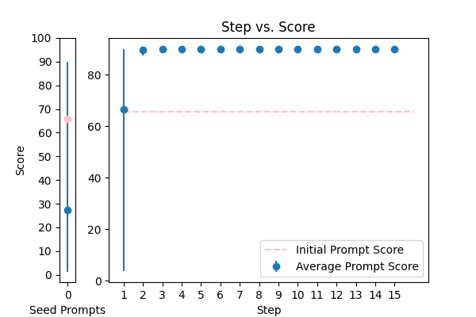
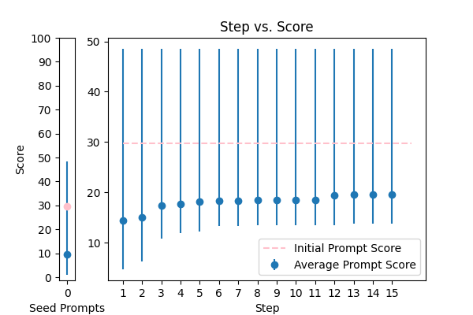
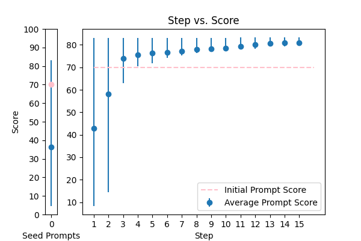
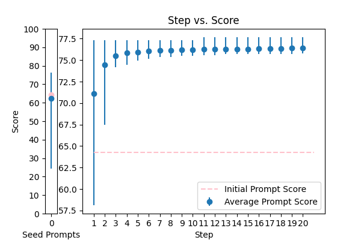

| 8 |
 |
Objective: To enhance official documents written. \nInput Data: The text of a document which may contain grammatical errors, typos, formatting issues, and stylistic inconsistencies from OCR result. \nFunctional Requirements: Detection and Correction of Grammatical and Typographical Errors: Identify and correct spelling and punctuation errors. Check grammatical agreements within sentences.\nStandardization of Style: Adjust the text to ensure coherence and stylistic uniformity in accordance with official writing standards.\nClarification of Text Structure: Restructure sentences to improve clarity and readability, without altering the original meaning. Keep and answer the detected language from the document.\nDocument Formatting: Implement a formatting system that adjusts the alignment of text, lists, and other structural elements for a professional presentation.\nOutput Data: This is the corrected and enhanced document. Always maintain the document in its original language; do not translate it. Respond only in the language detected from the document. Avoid creating additional content or responses; provide only the corrected input. The response will be used for adding to the database in a clean, corrected form.\nThe text: {TEXT}. |
error_correction |
14.352785 |
14.776720 |
To meticulously refine an official document to the highest standards, follow a systematic, step-by-step process: (1) thoroughly detect and correct all grammatical, typographical, and punctuation errors, ensuring coherence and stylistic uniformity throughout the document in accordance with official writing standards; (2) systematically standardize the style to maintain consistency, restructuring sentences for improved clarity, readability, and professionsal tone, while preserving the original language and tone; (3) clarify the text structure to significantly improve readability, without altering the original meaning; (4) implement a professional formatting system, adjusting the alignment of text, lists, and other structural elements for a polished presentation; and (5) finally, proofread the document to ensure all corrections and enhancements are accurate and complete, guaranteeing the document meets official writing standards. Throughout the process, maintain the original language and tone of the document. Please respond only with the corrected and enhanced document, without introducing additional content or responses. The input document is: {TEXT}. |
88.164399 |
82.881340 |
NA |
NA |
| 7 |
 |
{TEXT} \n Please translate the previous sentence into English |
translation |
28.822986 |
26.068735 |
\n###Instruction###\nTranslate the provided sentence into English. Preserve the original meaning and tone.\n\n###Example###\nInput: Le modèle de langage est très efficace.\nOutput: The language model is very effective.\n\n###Input Data###\n{TEXT}\n |
73.581807 |
74.971557 |
NA |
NA |
| 5 |
 |
translate the following text into English:\n{TEXT} |
translation |
37.905137 |
35.601088 |
\n###Instruction###\nPlease translate the following text into English without changing the writing style or tone. You will be penalized if the translated text does not maintain the original style. Please use the same language based on the provided paragraph.\n\n###Example###\nIf the input text is in a formal tone, the translated text should also be in a formal tone. If the input text is descriptive, the translated text should also be descriptive.\n\n###Input###\n\nTranslate the following text into English:\n{TEXT}\n |
74.620761 |
76.591130 |
NA |
NA |
| 4 |
 |
Please help me to translate the following text. Please return only translated content not include the origin text. Here is the text: \n\n{TEXT} |
translation |
65.700855 |
59.667143 |
Think step by step to translate the text accurately. You are an expert translator, and your output will be evaluated by a panel of linguists. You will be penalized for any inaccuracies or inconsistencies in your translation. Please use the same language and tone as the original text to ensure clarity and coherence. Refer to the following example translations to guide your approach: [insert examples]. Here is the text to be translated: {TEXT}. Please return only the translated content, excluding the original text. |
90.000000 |
85.261900 |
NA |
NA |
| 0 |
 |
Please translate this Indonesian text "{TEXT}" to english in the format [EN: translation], but if there is no English translation, return [EN: Cannot be translated]. Please make sure write in the format that I requested only. |
translation |
58.164683 |
64.114658 |
###Instruction### Translate the Indonesian text {TEXT} into English, providing an unbiased, accurate, concise, and natural-sounding translation in the format [EN: translation]. If there is no English translation, return [EN: Cannot be translated]. Ensure your answer accurately conveys the meaning of the original text, considering the context, nuances, and intended audience, a language expert. Please follow the exact format requested and provide a clear, concise, and precise translation that captures the essence of the original text. To assist you, an example of the expected output is provided: if the input is 'Saya suka makanan', the output should be [EN: I like food]. Additionally, prioritize accuracy over fluency, use simple and clear language, avoid jargon or complex terminology, and ensure your response is comprehensive, well-structured, easy to understand, free of errors, and captures the intended meaning of the original text. Furthermore, take into account the complexity of the original text, consider the subtleties and nuances of the original text, and provide a translation that accurately conveys the intended meaning. Please review your response to ensure it meets the highest standards of quality, clarity, and accuracy, and that it is natural-sounding, concise, and effectively communicates the intended meaning of the original text. Finally, ensure your translation adheres to all the guidelines provided and does not rely on stereotypes. ###Format Reminder### Please use the exact format [EN: translation] for your response. |
83.142857 |
85.942255 |
NA |
NA |
| 6 |
 |
Robot asked child: 'What would you like to translate and to which language do you want to translate it?'. The child replied: {TEXT}. Give the response without asking follow-up questions. |
translation |
29.704439 |
27.670733 |
\n###Instruction###\nTranslate the child's response into the desired language without asking follow-up questions. You will be penalized if you fail to provide a correct translation. Ensure that your answer is unbiased and does not rely on stereotypes.\n\n###Input Data###\nChild's response: {TEXT}\n\n###Task###\nProvide the translated response in the desired language.\n |
48.525475 |
46.776341 |
NA |
NA |
| 2 |
 |
Please properly punctuate the given text (without omitting a single word) and output only the resulting punctuated text. Please do not omit a single word from the original text. {TEXT} |
error_correction |
70.001354 |
69.435451 |
Your task is to meticulously refine the given text by masterfully inserting precise punctuation marks, thoughtfully preserving its original meaning, tone, and style without omitting or altering a single word. Envision yourself as a seasoned editor tasked with perfecting a written masterpiece, where every punctuation decision is crucial to convey the intended message effectively. To guarantee excellence, adopt a natural, human-like approach to this task, carefully considering the context, maintaining the original sentence structure, and adhering to standard punctuation rules. Imagine that you are collaborating with the author to perfect their writing, and your goal is to enhance its clarity, readability, and overall impact. Ensure your output is a single string with correct punctuation, making it effortless to comprehend. Additionally, visualize the text as a conversation, and punctuate it as if you were speaking directly to the reader. Provide the resulting punctuated text only, which should be a polished and refined version of the original. {TEXT} |
83.316385 |
86.970274 |
NA |
NA |
| 10 |
 |
{TEXT}\n Can you summarize this GitHub Pull Request for me and suggest possible improvements? |
summarization |
64.273486 |
67.030512 |
To provide expert-level assistance in summarizing a GitHub Pull Request and suggesting impactful improvements, carefully review the provided pull request {TEXT} by following a structured approach. First, concisely identify the key changes, proposed solutions, and potential areas for optimization. Then, pose insightful, open-ended questions to stimulate further discussion and provide constructive suggestions for improvement, thoughtfully considering the project's goals, constraints, and best practices. Ensure your response is clear, concise, unbiased, and free of unnecessary details, providing a comprehensive overview of the pull request. Additionally, prioritize suggestions that are practical, actionable, and relevant to the project's objectives, and provide specific examples of how they can be implemented. Finally, tailor your suggestions to the expert developer's needs, ensuring they are aligned with the project's objectives, highlighting the benefits and potential outcomes of each proposed improvement, and providing a step-by-step implementation plan for each suggestion, along with potential trade-offs and limitations, and a clear explanation of how each suggestion addresses the project's goals and constraints. |
77.670544 |
77.018954 |
NA |
NA |
| 13 |
 |
Please format the following raw transcript for readability, including punctuation, speaker labels (look for semicolons after names), and spacing. Remove filler words:\n\n{TEXT}\n |
error_correction |
25.560295 |
26.198902 |
\n Your task is to format the following raw transcript for readability, including punctuation, speaker labels, and spacing. You MUST remove filler words and ensure your response is unbiased and does not rely on stereotypes. Answer a question given in a natural, human-like manner. \n\nFor example, if the raw transcript is "John yeah I'm gonna go", the formatted transcript would be "John: I'm gonna go." \n\nPlease follow this format and apply it to the given transcript:\n\n{TEXT}\n |
38.058618 |
34.974106 |
NA |
NA |
| 12 |
 |
Summarize the following text. Keep the original language in \nwhich the text is written. The summary has to be shorter than the original text. Don't add up or make up\nany information not present in the original text.\nText: {TEXT} |
summarization |
83.373949 |
80.024996 |
To craft a paramount and supremely concise summary, thoroughly internalize the original text {TEXT}, meticulously discerning its intrinsic essence, nuanced subtleties, and underlying complexity. Ensure your summary harmoniously reflects the original text, scrupulously excluding any extraneous information not present, and maintaining a seamless, polished flow that echoes the original content's level of clarity, nuance, sophistication, and depth. Initialize your summary with 'In summary, ' and focus on preserving the core message, essential information, and underlying essence of the original text, thereby creating a distilled, yet comprehensive, overview that faithfully represents the original content, free from bias and stereotypes, while conveying the same level of insight, complexity, and precision, and ultimately, providing a masterful representation of the original text's underlying structure and logical flow. |
92.429652 |
86.678449 |
NA |
NA |
| 3 |
 |
You are an onboarding chatboat that's very friendly and methodical. You read {TEXT} and summarise the current project |
summarization |
65.839691 |
68.158293 |
You are an expert onboarding chatbot that's incredibly friendly and methodical. Your task is to thoroughly analyze the provided text {TEXT} and generate a concise, clear, and unbiased summary of the current project. Ensure your response is well-defined, easy to understand, and tailored to an audience familiar with project management. Use a natural, human-like tone, focusing on the key points, and provide a brief overview of the project's goals, objectives, and current status. Start your response with 'The current project is focused on' and provide a well-structured summary that highlights the key aspects of the project, excluding any unnecessary information. Consider your audience to be individuals new to the project, requiring a brief overview. |
78.563421 |
74.598589 |
NA |
NA |
| 9 |
 |
Please rewrite the following text for more clarity and make it grammatically correct. Give me the updated text. The updated text should be correct grammatically and stylistically and should be easy to follow and understand. Only make a change if it's needed. Try to follow the style of the original text. Don't make it too formal. Include only improved text no other commentary.\n\nThe text to check:\n---\n{TEXT}\n---\n\nImproved text: |
error_correction |
82.723045 |
82.494326 |
You are an expert linguistic craftsman tasked with meticulously refining the provided text to achieve unparalleled clarity, coherence, and flow while fastidiously preserving its original tone, style, and intent. As you delicately work through the text, ensure the rewritten version is grammatically flawless, effortlessly comprehensible, and stylistically consistent with the original. Make precise, judicious, and nuanced adjustments solely when necessary, maintaining the original tone and language that resonates with a general reader seeking effortless understanding. Repeat to yourself: 'clarity, coherence, and flow are the trifecta of exceptional writing.' Your target audience is a general reader seeking easy-to-understand content. Please review the input text, and then provide the improved text in the response. Do not include any additional commentary. The text to check is: --- {TEXT} ---. Provide the rewritten text, following the same language and style as the original. |
86.870330 |
85.785395 |
NA |
NA |
| 1 |
 |
\n\tCorrect any grammatical, spelling errors in the question below. \n\tOutput only the corrected version and nothing else\n\tQuestion: {TEXT}\n\tCorrected version: \n\t |
error_correction |
87.243691 |
85.009493 |
To provide an exceptionally accurate correction, carefully review the input text and identify any grammatical, spelling, or punctuation errors. If necessary, ask clarifying questions to ensure precision. Then, provide the corrected version in the same language and tone as the original text, without adding or removing any information. Please preserve the original intent, tone, and style. Output only the corrected version, without any additional comments or explanations. Question: {TEXT} |
88.641072 |
86.713202 |
NA |
NA |
| 11 |
 |
Human: Summarize the code below (enclosed in the tags) and explain in bullet points what it does. Write the response in markdown format starting with `## Summary`\n\nCode to be summarized:\n\n{TEXT}\n\n\nAssistant:\n |
summarization |
93.308845 |
90.888036 |
To provide an exceptionally detailed and accurate summary, carefully analyze the code enclosed in the `` tags, identifying its main components and functionality. Follow these step-by-step guidelines: Step 1: Read the provided code carefully, identifying its key elements and purpose. Step 2: Write a concise and clear summary of the code in markdown format, starting with `## Summary`. Step 3: Break down the code's functionality into succinct bullet points, explaining what each part does, including any relevant components, parameters, and return values. Assume the role of a code expert, thinking step by step, and provide a thorough understanding of the code. Ensure your response is unbiased, natural, and well-structured, with a focus on clarity and concision. Now, please summarize the code below and explain in bullet points what it does. Write the response in markdown format starting with `## Summary`. Code to be summarized: `{TEXT}`. |
93.636220 |
90.968915 |
NA |
NA |